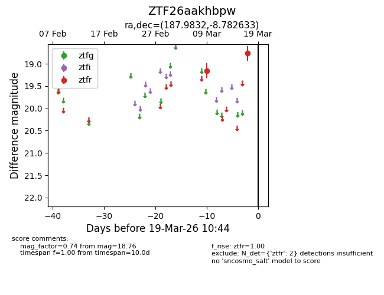
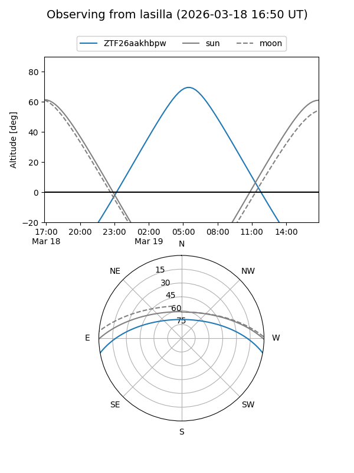
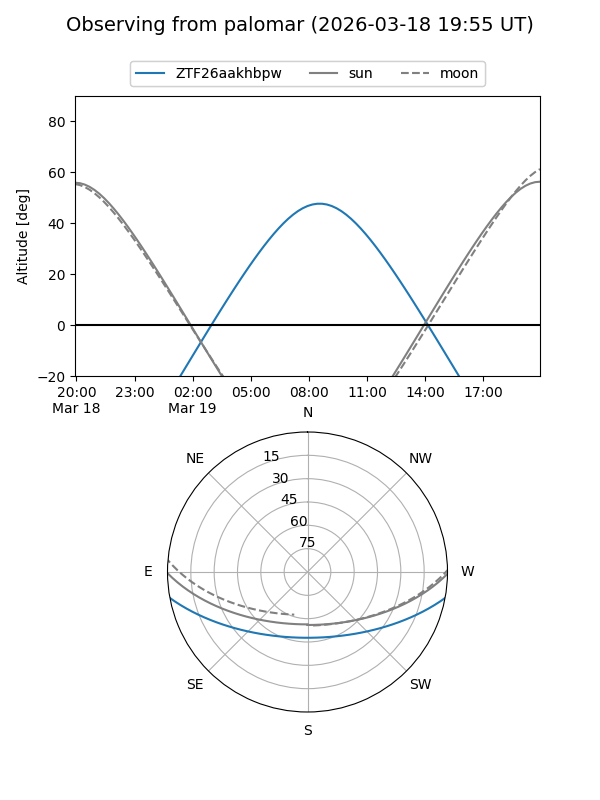

ZTF26aakhbpw
Target ZTF26aakhbpw at 2026-03-19 10:46
Aliases and brokers:
FINK: link
Lasair: link
ALeRCE: link
alt names
ZTF26aakhbpw (ztf,fink_ztf)
Coordinates:
equatorial (ra, dec) = 187.9832,-8.78263
equatorial (HMS+DMS) = 12:31:55.98,-08:46:57.48
galactic (l, b) = (294.7586,+53.77929)
Flags:
Photometry:
last ztfr=18.76
2 ztfr detections
Lightcurve

Visibility


Additional plots